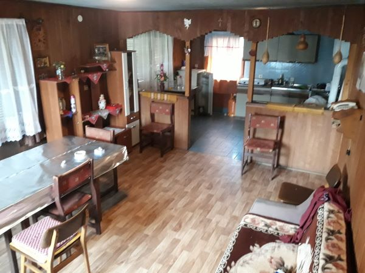
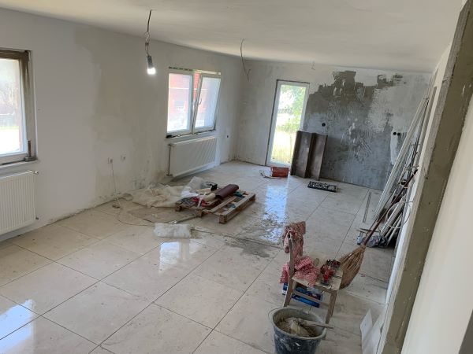
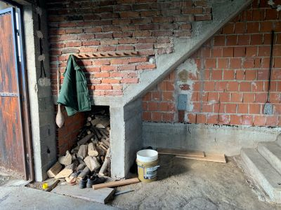
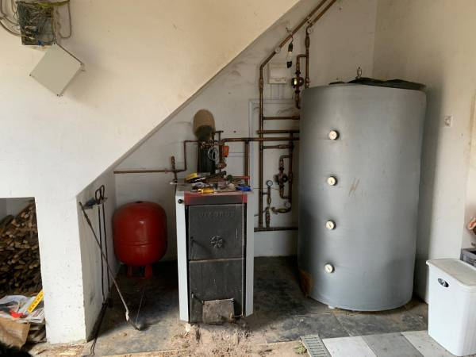
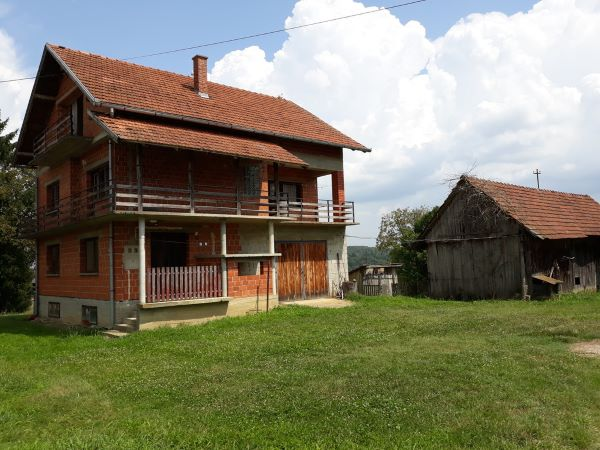
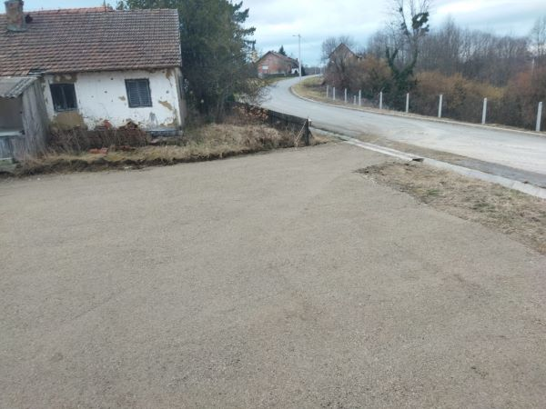

📅 Trajanje: 14 mjeseci
📍 Lokacija: Samarica
📋 Radovi: Krov, dimnjaci, pregradni zidovi, stolarija, bravarija, žbukanje, keramika, centralno grijanje,el. i vodo-instalacije

Mračna soba, nizak plafon, drvena oplata, peć u kutu kuhinje

Nova žbuka, stolarija, keramika i radijatori; nova boja, svijetlo i prozračno

Garaža - neožbukano, uski dimnjak, zemljani pod

Moderna kotlovnica koja grije cijelu kuću, Schiedel dimnjaci.

Nepregledno, grbavo dvorište s divljim rastinjem

Nakon 60 kubika šljunka, valjak je napravio parking za 10 automobila.